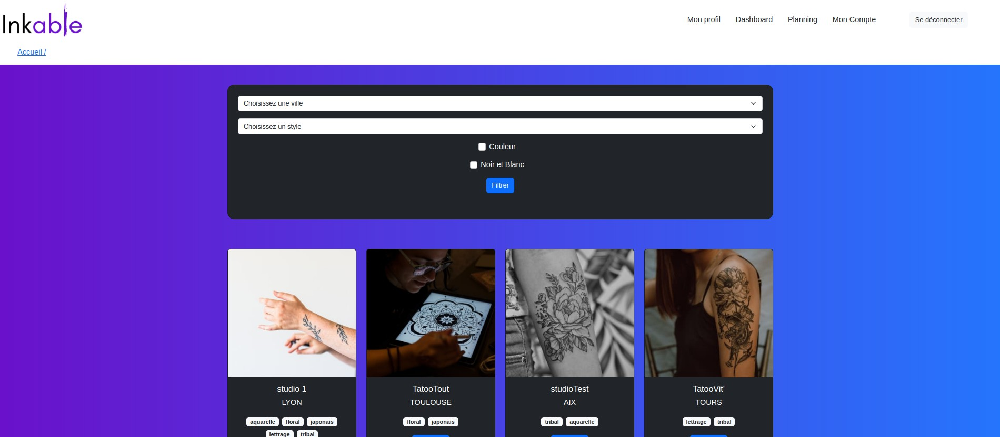

Mes projets en ligne
Fractales
Hanoï
Mission-lecture
Mes projets Github
Inkable
Dev' diary

Index de livre
A propos de moi
Mon parcours
Langages et technologies
Me contacter
Générateur de fractales
Quoi de plus fascinant que les fractales ? Un thème de projet idéal pour découvrir la librairie P5.js qui dispose d'un grand nombre de méthodes pour dessiner sur un canvas. Il a bien sûr fallu faire quelques recherches pour dénicher les formules mathématiques indispensables !
Les technos
- HTML
- CSS
- Javascript
- P5.js
Les tours de Hanoï
Le jeu des tours de Hanoï est un jeu de réflexion consistant à déplacer des disques d'une tour de départ à une tour d'arrivée en un minimum de coups.
Les technos
- HTML
- CSS
- Javascript
Mission-lecture
Un site 100% autodidacte qui propose de nombreux jeux de lecture, orthographe, grammaire, etc à des enfants de niveau primaire.
Les technos
- PHP
- Symfony 4
- MySQL
- HTML/twig
- Javacript
Inkable
Une application réalisée de A à Z en équipe (3 personnes) dans le cadre d'un projet de fin de formation à l'école O'Clock. L'objectif était de proposer une plateforme de mise en relation de professionnels du tatouage et de futurs clients potentiels
Quelques captures
Les technos
- Node.js
- Express.js
- PostgreSQL
- Vue.js 3
- FullCalendar
- Bootstrap
Dev'diary
Quand on est développeur la veille c'est indispensable ! Voici un projet de journal de veille technologique afin de garder une trace de ses recherches.
Quelques captures
Les technos
- Node.js
- Express.js
- PostgreSQL
- Javascript
Générer un index de livre
Un programme qui génère un index automatiquement (dans la console et dans un fichier texte) à partir d'un fichier source et de la liste des mots que l'on veut afficher dans l'index. J'ai pour cela implémenté deux structures de données un ABR (Arbre Binaire de Recherche) et un AVL (arbre équilibré)
Capture

Les technos
- Java
Mon parcours
J'ai découvert le développement et la programmation de manière autodidacte, il y a maintenant plus de 4 ans. Cela a été une révélation ! Depuis je n'ai cessé d'apprendre, de chercher à découvrir par moi-même.
J'ai accompagné des enfants en situation de handicap pendant plus de 10 ans. En 2021, j'ai finalement obtenu une rupture conventionnelle qui m'a permis d'entamer pleinement ma reconversion professionnelle.
Avant de me lancer dans ma nouvelle vie active, j'ai choisi de suivre une formation dans le domaine du développement web. De mars à septembre 2022, j'ai beaucoup appris dans le cadre d'une formation de développeur Fullstack Javacript à l'école O'Clock. J'ai decouvert tout un ensemble de bonnes pratiques, de nouvelles technologies (côté backend et frontend) et j'ai développé un projet au sein d'une équipe de 3 développeurs dans le respect des méthodes Agile.
En parallèle, je suis depuis septembre 2021, des unités d'enseignement de licence informatique avec le Centre National des Arts et Métiers.
Passionnée, autonome et persévérante, je pense posséder les qualités requises pour exercer le métier de développeuse. Dans l'idéal, j'aimerais exercer en Full Remote.
RetourMes compétences
Langages
HTML/CSS
Javacript
PHP
Java
Python
C++
Techno Backend
Node.js
Express.js
Postgres/PgAdmin
MySQL/phpMyAdmin
Symfony
Techno Frontend
Vue.js
Bootstrap/Materialize